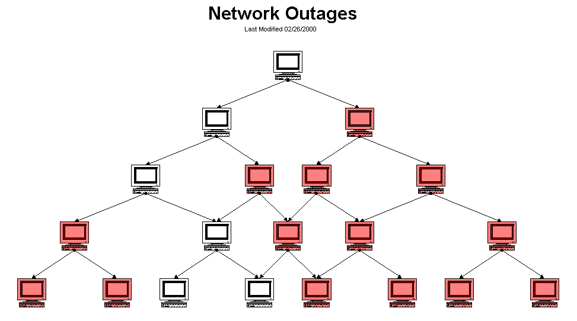
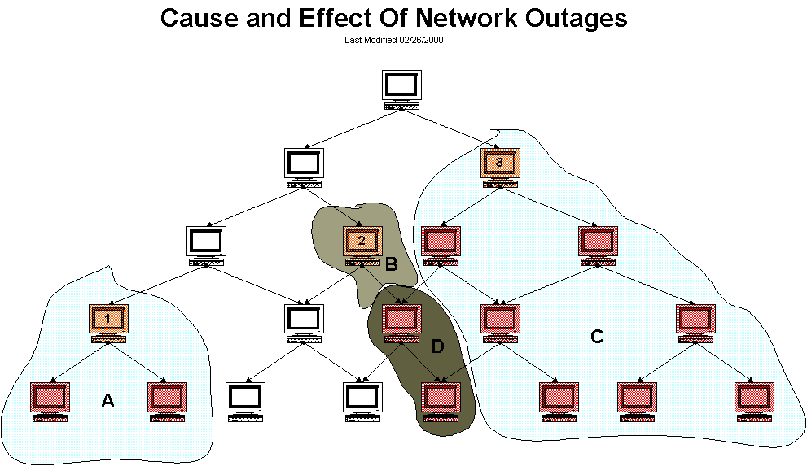

Introduction
The outages CGI is designed to help pinpoint the cause of network outages. For small networks this CGI may not be particularly useful, but for larger ones it will be. Pinpointing the cause of outages will help admins to more quickly find and resolve problems which are causing the biggest impact on the network.
It should be noted that the outages CGI will not attempt to find the exact cause of the problem, but will rather locate the hosts on your network which seem to be causing the most problems. Delving into the problem at a deeper level is left to the user, as there are any number of things which might actually be the cause of the problem.
Diagrams
The diagrams below help to show how the outages CGI goes about determining the cause of network outages. You can click on either image for a larger version...
| Diagram 1 |
| This diagram will serve as the basis for our example. All hosts shows in red are either down or unreachable (from the view of Nagios). All other hosts are up. |
|  |
| Diagram 2 |
| This diagram pinpoints the causes of the network outages (from the view of Nagios), and shows various groups of hosts which are affected by the outages. |
|  |
Determining The Cause Of Network Outages
So how does the outages CGI determine which hosts are the source of problems? "Problem" hosts must be either in a DOWN or UNREACHABLE state and at least one of their immediate parent hosts must be UP. Hosts which fit this criteria are flagged as being potential problem hosts.
In order to determine whether these flagged hosts are causing network outages, we must performs some other tests...
If all of the immediate child hosts of one of these flagged hosts is DOWN or UNREACHABLE and has no immediate parent host that is up, the flagged host is the cause of a network outage. If even one of the immediate children of a flagged host does not pass this test, then the flagged host is not the cause of a network outage.
Determining The Effects Of Network Outages
Along with telling you what hosts are causing problem on your network, the outages CGI will also tell you how many hosts and services are affected by a particular problem host. How is this determined? Take a look at diagram 2 above...
From the diagram it is clear that host 1 is blocking two child hosts (in domain A). Host 2 is solely responsbile for blocking only itself (domain B) and host 3 is solely responsibly for blocking 7 hosts (domain C). The outage effects of the two hosts in domain D are "shared" between hosts 2 and 3, since it is unclear as to which host is actually the cause of the outage. If either host 2 or 3 was UP, the these hosts might not be blocked.
The numbers of affected hosts for each problem host are as follows (the problem host is also included in these figures):
Ranking Problems Based On Severity Level
The outages CGI will display all problem hosts, whether they are causing network outages or not. However, the CGI will tell you how many of the problem hosts (if any) are causing network outages.
In order to display the problem hosts in a somewhat useful manner, they are sorted by the severity of the effect they are having on the network. The severity level is determined by two things: The number of hosts which are affected by problem host and the number of services which are affected. Hosts hold a higher weight than services when it comes to calculating severity. The current code sets this weight ratio at 4:1 (i.e. hosts are 4 times more important than individual services).
Assuming that all hosts in diagram 2 have an equal number of services associated with them, host 3 would be ranked as the most severe problem, while hosts 1 and 2 would have the same severity level.
{kind=link}
{kind=link}